Scientific Information Design Gets an Upgrade

Client: Personal project
Earth’s Alchemy explores the intersection between web design and 3D animation through the lens of the Periodic Table of Elements. In this personal project I rethink the traditional and create an experience that fuses information design with modern day browser capabilities.
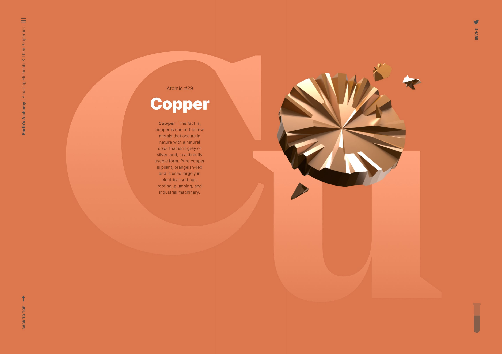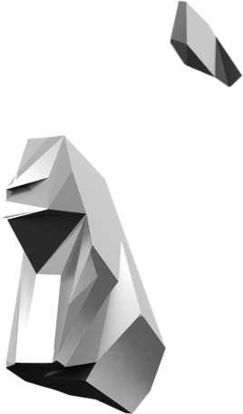

My Role: UX, UI, 3D, Web Dev.

Project Type: Website
Scientific Information Design Gets an Upgrade
Client: Personal project
My Role: UX, UI, 3D Web Dev.
Project Type: Website
Earth’s Alchemy explores the intersection between web design and 3D animation through the lens of the Periodic Table of Elements. In this personal project I rethink the traditional and create an experience that fuses information design with modern day browser capabilities.
Earth’s Alchemy is an exercise in information design, technology, and science.
Keeping one’s design skills sharp is a moving target. With the proliferation of new techniques, technology, and design aesthetics, there’s always an opportunity to create an experience that pushes the limit.
Since I’ve always had a passing interest in science, creating a project based on the Periodic Table would enable me to learn a good deal about Earth’s elements and at the same time, share that information with others who may have similar interests.
As I see it, part of what makes the Periodic Table (arguably) boring, is what it looks like. I wanted to explore design’s impact on holding interest and spurring engagement by rethinking this highly recognizable scientific artifact. Let’s dig in.
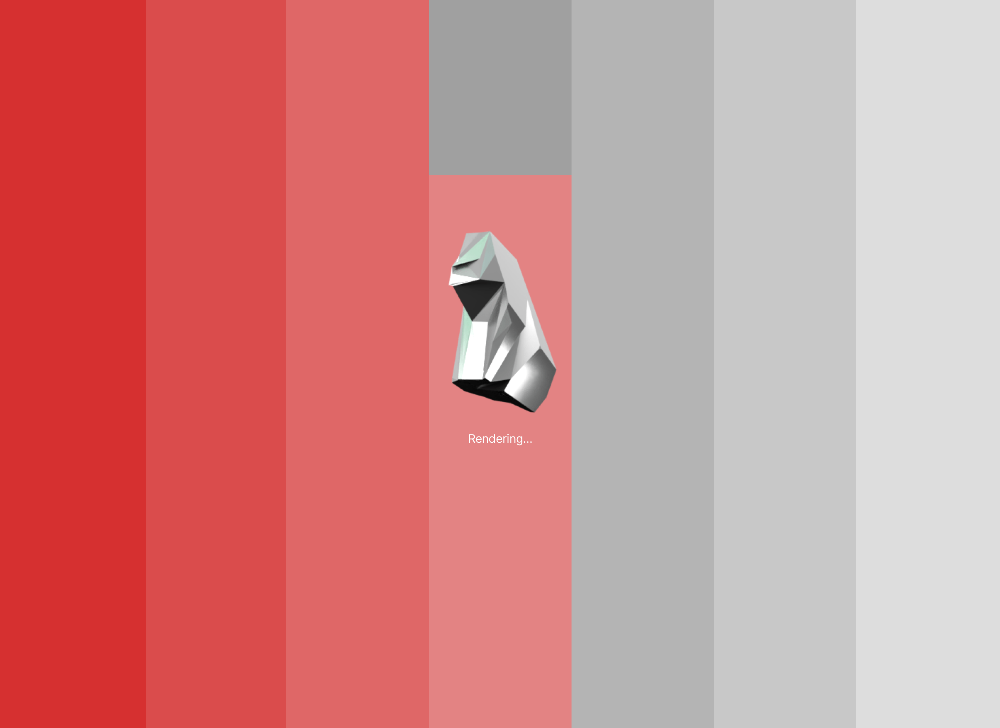
Loading: An “on page-load” interaction working as a basic preloader
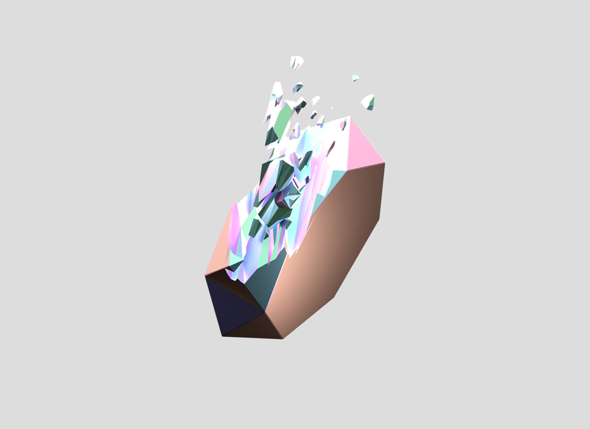
3D Render: Atomic #83, Bismuth.
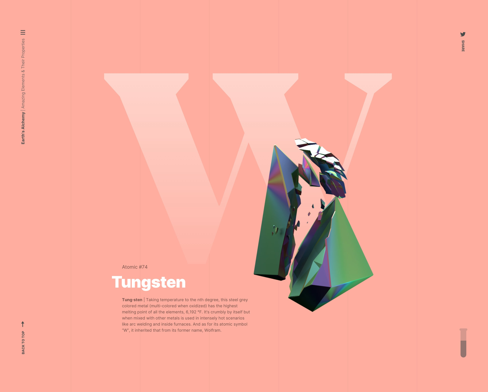
Site Detail: Atomic elements float on top of a symbol, with accompanying text description.
Defining the Periodic Table
The Periodic Table of Elements are a collection Earth’s known elements—here’s how I translated them into a website.
There are 118 element divided into 7 rows and 18 columns. The elements in these rows and columns share similar properties. This helped inform the structure of the site because I knew I wanted to create a condensed experience, using only a portion of the elements from the table. I decided I’d use one element from each of the 18 groups. The structure is simplistic in form; one long scrolling page. In this way, the user can focus their attention on the information being presented.
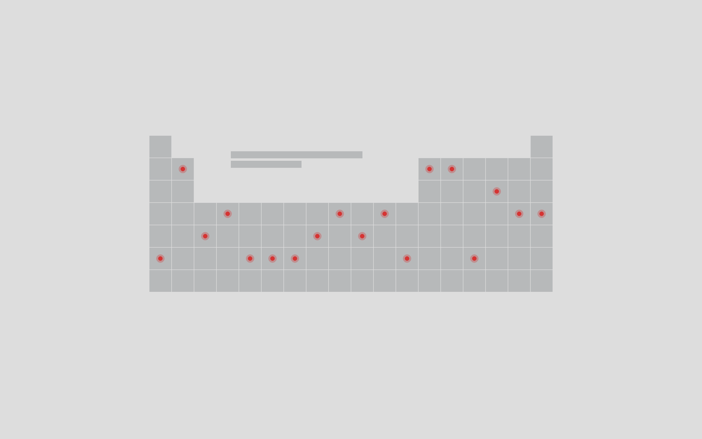
The Periodic Table: One element from each column comprises the site.
Modernizing the traditional
The experience eschews the traditional table design where the visual focus begins with an element’s atomic symbol.
I selected one element from each group on the Periodic Table (as groups on the table share similar characteristics) and rendered them in 3D using a program called Blender.
And in terms of the navigation, I mirrored the basic design of the site with interspersed menu items to accentuate the verticality of the design.
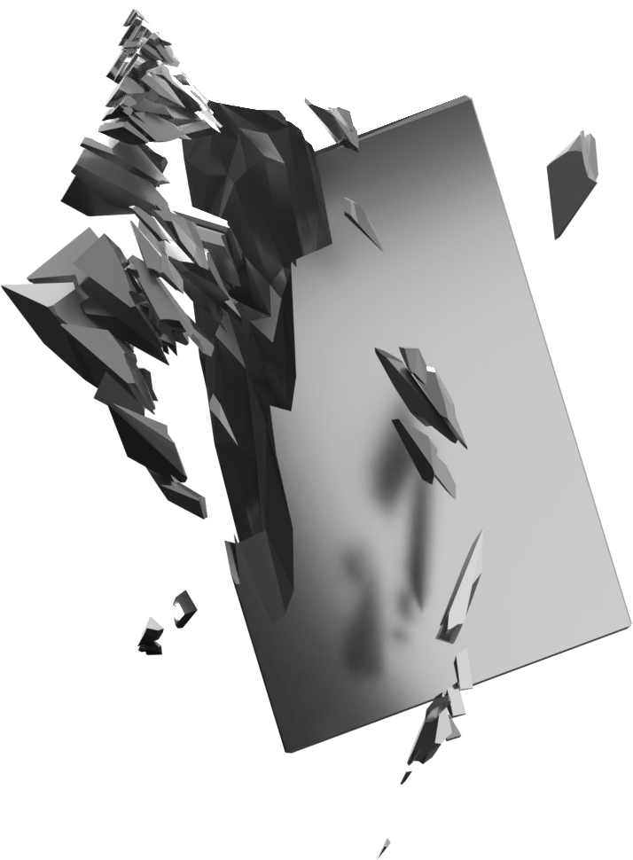
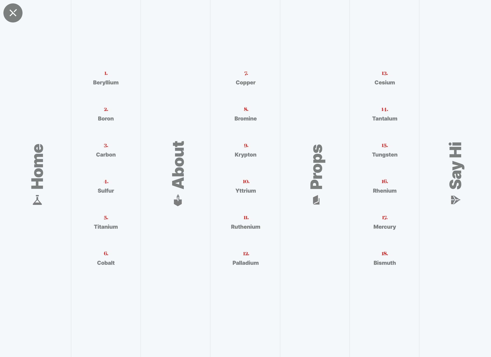
Navigation: Vertical menu items interspersed between columns.
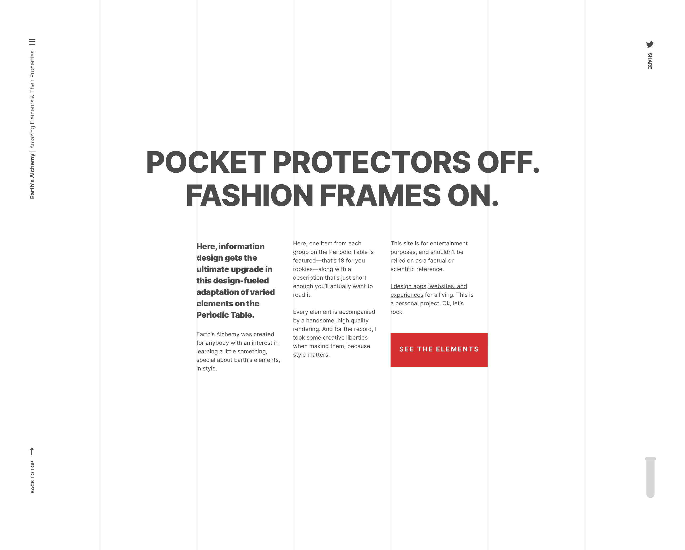
Section Detail: The About section uses a distinct grid with left-aligned text to emphasize the structure.
The structure of the site is simplistic in form; one long scrolling page. In this way, the user can focus their attention on the information being presented.
Even having opted to display one element from each group on the table, a large portion of the elements could have the propensity to look similar since they’re either metals or gases. Knowing this, and to further enhance the visual interest of the design, I crafted most hard elements from a solid geometric shape. For example, yttrium and copper is a more defined solid shape where mercury, depicted as a liquid, is contained inside a laboratory object. You’ll see in a minute.
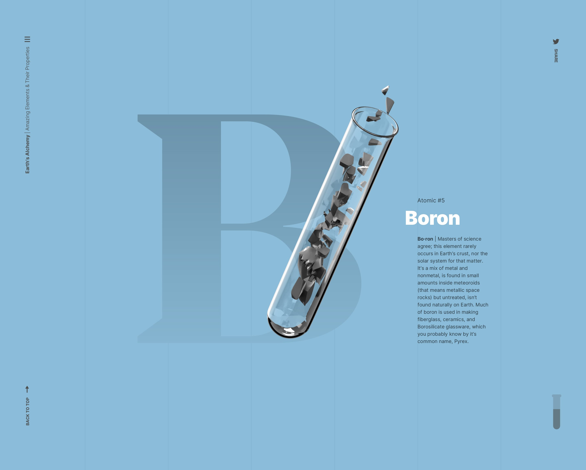
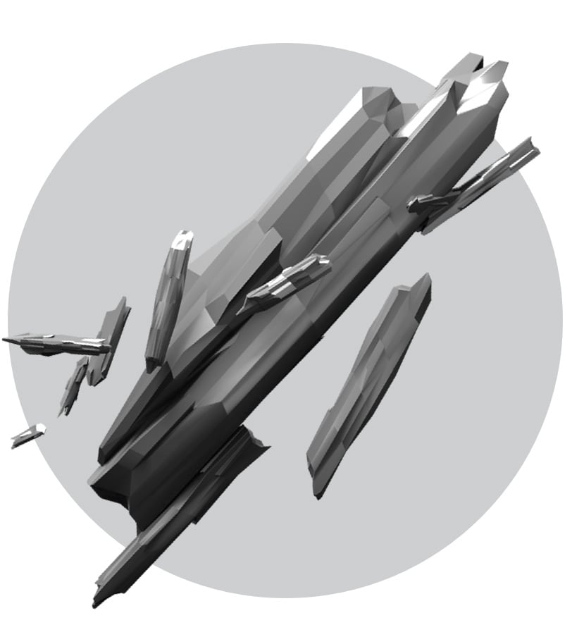
Atomic #39: Yttrium. A silver colored metal that when alloyed can create needles so incredible they cut more accurately than scalpels.
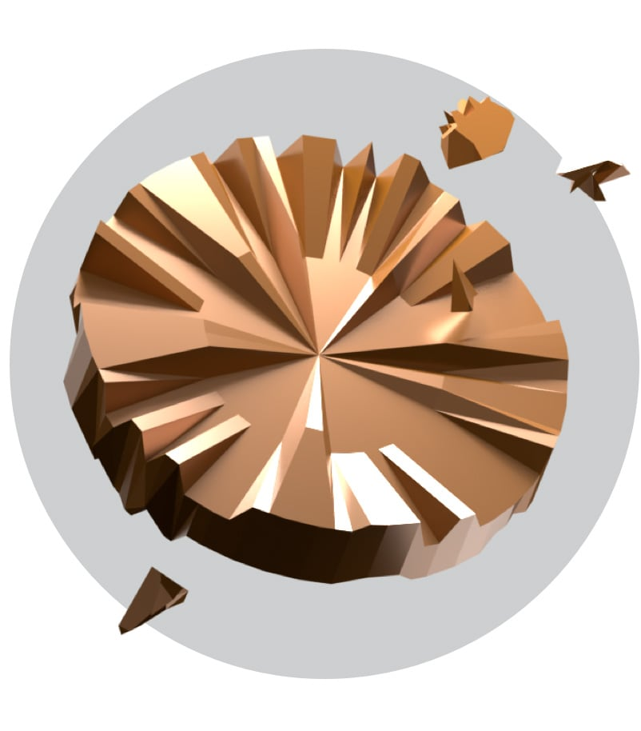
Atomic #80: Copper. Used largely in electrical settings, roofing, plumbing, and industrial machinery.
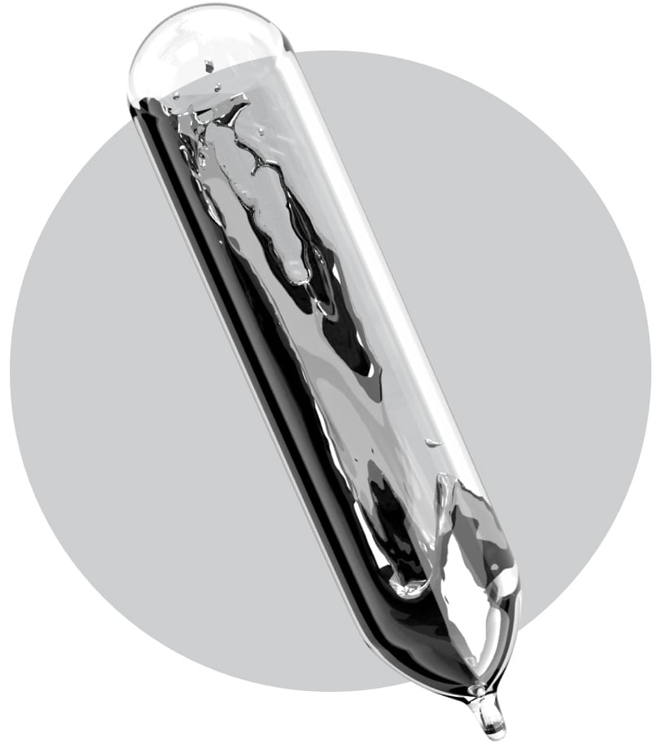
Atomic #80: Mercury. This metal is toxic, especially in large doses. Today, it’s only used mostly in manufacturing and scientific study.
Type that brings it all together
A font named Mirador
This project is a thoughtful amalgam of art and science. My goal was to educate the viewer on Earth’s elements but to do so in a way that wasn’t boring. As a nod to the scientific and technical side of things, I chose to use a more academic looking serif font, paired with a bold sans serif for lengthy copy to modernize things.
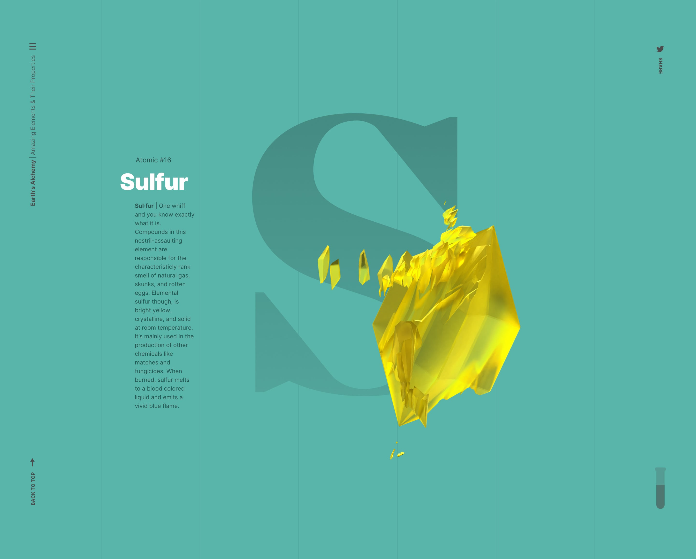
Mirador is both bold and delicate as geometric letterforms lend way to delicate lines, perfectly tapered by serifs.
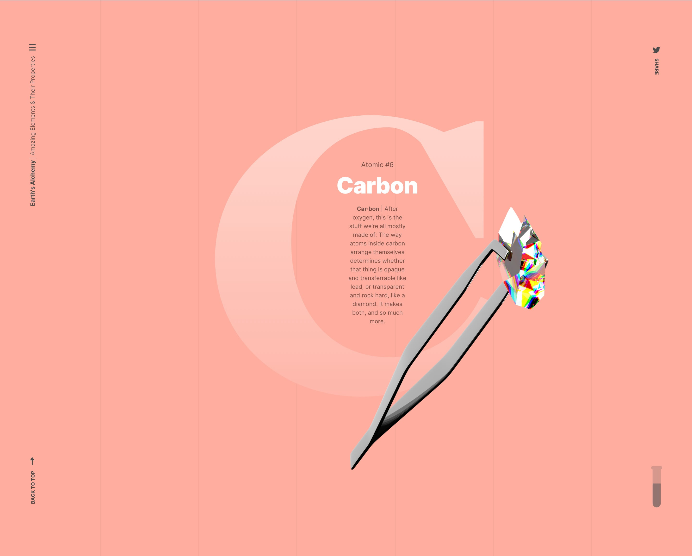
The takeaway
At the end of everything I was able to create a comprehensive web experience using some of the latest techniques and design aesthetics.
Insights
At the end of all of this I was able to create a comprehensive web experience using some of the latest techniques and design aesthetics; because of their progressive nature, some of the methods used don’t behave flawlessly in every browser. At any cost, it was important to me to push the limits of my abilities and the software that delivers the experience.
Challenges
I begun the development portion of Earth’s Alchemy by trying my hand at using CSS grid. Going in, I wondered if this approach would serve the project best as the structure of each part of the site adheres to a similar grid. I struggled for about a week trying to learn CSS grid and its use-cases. After more insight I determined that flexbox would achieve the result I wanted.
Lessons
With every new project I create there is so much to learn. Yet, to narrow my findings down to one lesson it would have to be that of integrating 3D animation into a web project. In the beginning I didn’t know how bandwidth-intensive a project like this would be. Moving forward, I’m better prepared to envision and execute projects like this with even more confidence.
Up Next
AI-Powered Content Distribution for Publishers